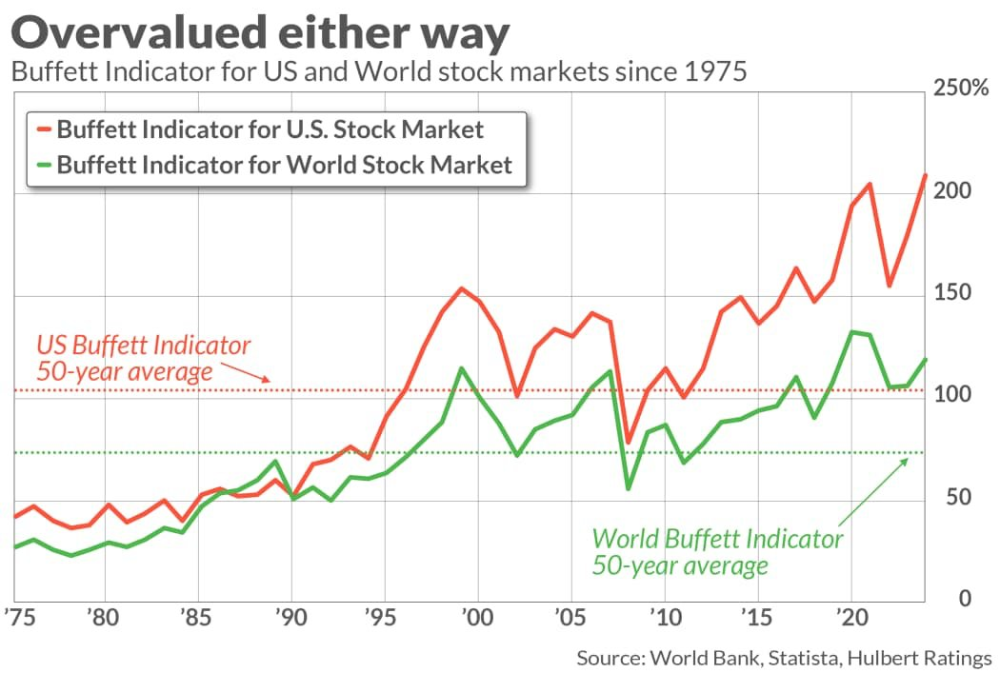

At Berkshire Hathaway's shareholder meetings, investors have asked Warren Buffett some version of the same question for thirty years: how do I know when to buy? What price-to-earnings ratio is too high? Should I wait for a dip? His answer has barely changed in three decades, and it has nothing to do with timing at all.
Buffett's standing instruction — repeated again in his most recent annual letter — is that the average investor should hold the vast majority of their portfolio in a low-cost, broad-market index fund. He's said this is the advice in his own will: that the bulk of what he leaves to his wife should go into index funds, not into anything actively managed. "It's better advice," he noted, "than people are generally getting from people who are paid a lot of money to give other advice."
Why He Refuses to Answer "When"
The more interesting part isn't the index fund recommendation — most people who follow markets already know that. It's how firmly he rejects the idea that there's a right moment to start. Asked directly what P/E ratio, or what benchmark, should tell someone when to buy, Buffett's answer was blunt: there isn't one. Not price-to-earnings, not price-to-book, not any single metric. "It just isn't that easy," he said. "You'd love to have something that said, if the P/E is 12 or below, you buy, and if it's 25 or above, you sell. It doesn't work that way."
His prescription instead is to buy a broad index in roughly equal amounts over a long stretch of time — 20 or 30 years, by his own example — rather than committing a lump sum at any single point. The reasoning is almost anti-climactic: he doesn't know enough to pick winning stocks, and he doesn't know enough to pick winning moments. Spreading purchases over time is simply an acknowledgment of that limit, not a strategy for beating it.
This is worth sitting with, because by most broad valuation measures, including the so-called Buffett Indicator — total market capitalization relative to GDP — U.S. stocks have spent much of the last decade trading above their long-run historical average.

If "the market looks expensive" were a valid reason to sit out, Buffett would have told his own family to sit out years ago. He hasn't. The instruction in his will still stands. That's the point: a broad valuation being elevated tells you almost nothing about what happens over the next year, and by his own admission, no one — including him — can reliably use it to time an entry or exit. The response isn't to wait for the indicator to come back down. It's to keep buying anyway, in regular amounts, regardless of what the indicator says today.
The Part Most People Skip: Can You Actually Hold?
Buffett's other consistent point is less about strategy and more about temperament — and it's the part most people underweight. He's pointed out that Berkshire's own stock has fallen by 50% or more three separate times in its history. Nothing was wrong with the company in any of those moments. The investors who got hurt weren't wrong about the business; they were leveraged, or they panicked, or they simply weren't built to watch a 50% drawdown without acting on it.
"You shouldn't buy stocks unless you're prepared, financially and psychologically, to hold them the same way you'd hold a farm — and never look at the quote."
He's described fear as something that hits different people with different intensity, "like a virus." Some investors simply aren't built to sit through volatility, and he doesn't pretend otherwise. His advice for that case is unusually direct: if you can't handle the psychology, you're going to buy and sell at the wrong moments regardless of how sound the underlying strategy is. The fix isn't a better entry signal — it's removing the decision from emotion in the first place.
What This Means If You're Doing It Yourself
Taken together, Buffett's answer to "how do I invest" has three parts that rarely get separated out: a broad, low-cost index; purchases spread over time instead of timed to a signal; and a pre-built tolerance for the portfolio falling hard without reacting. The first two are mechanical. The third is the one people actually struggle with — and it's the one no calculator can solve for you.
This is also where dollar cost averaging earns its keep, even by Buffett's own framing. It's not a tool for getting a better price than someone who got lucky with a lump sum. It's a tool for making sure temperament doesn't override the plan — for making the decision once, in advance, so there's nothing left to decide in the moment markets get uncomfortable.
Quotes drawn from Warren Buffett's remarks at Berkshire Hathaway shareholder meetings. Views expressed are his own.